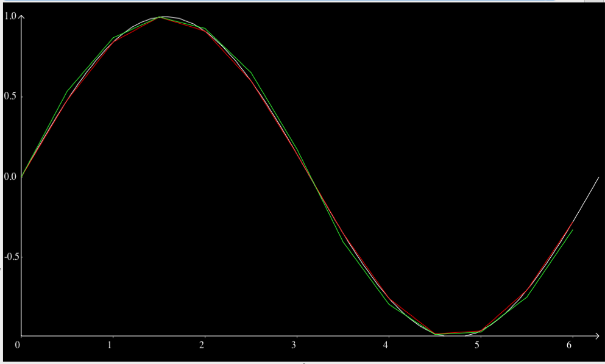

This workspace provides a collection CellML models primarily developed for testing software tools and the model repository. There are models for calculating sine using the MathML sin operator, a parabolic approximation, and a differential equation approximation.
The CellML document sin_approximations_import.xml is the top-level CellML model. It imports the three sub-models which define the three ways of calculating sine. The SED-ML document sin_approximations_sedml.xml describes a simulation experiment which computes a sine wave over the interval 0 to 2*pi using these three methods and plots a graph showing that they all give similar results (see image below). sin_approximations_import.xml also contains a CSim summary description of the simulation experiment defined in sin_approximations_sedml.xml such that CSim can be used to perform the actual numerical computations required to produce the data shown in the graph below.

OpenCell version 0.8 can also be used to perform the same simulation experiment, with the results plotted below highlighting the differences between the three methods a bit better: 